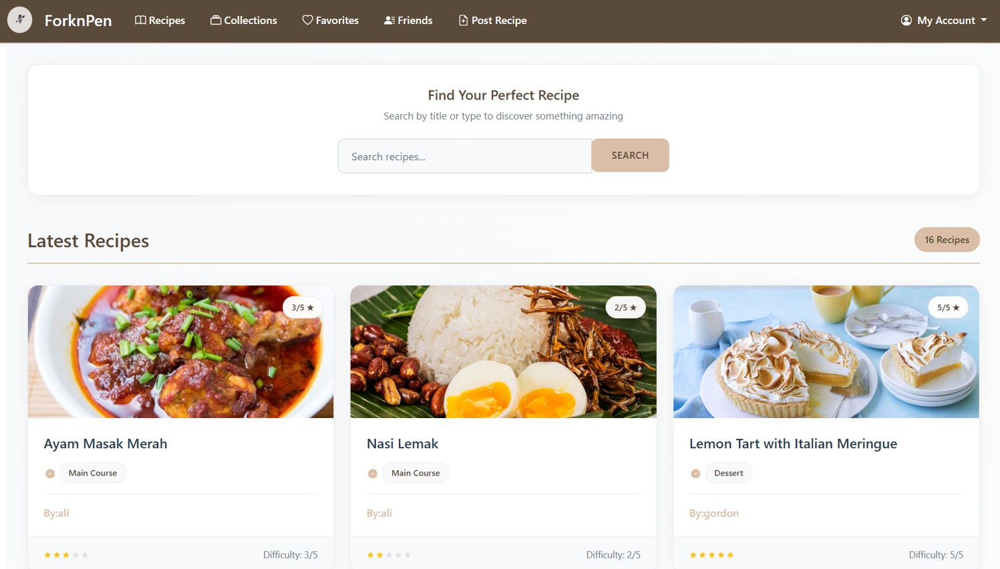
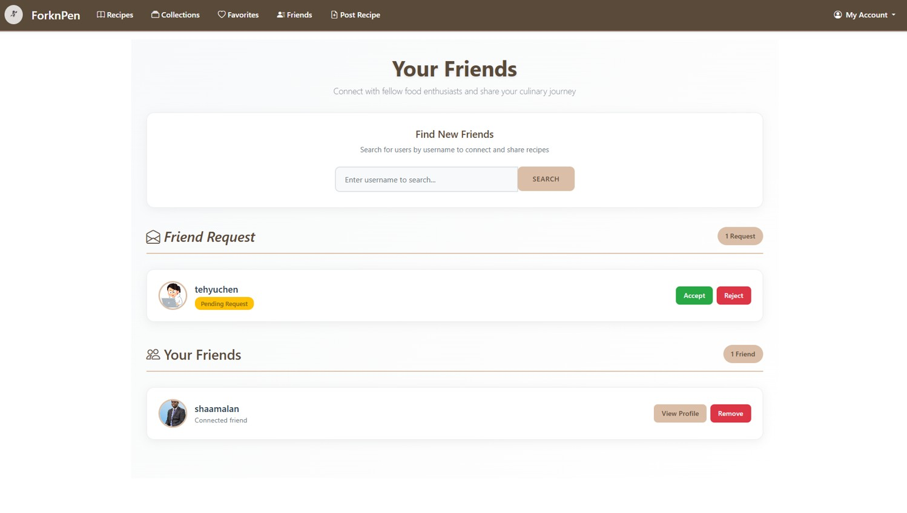
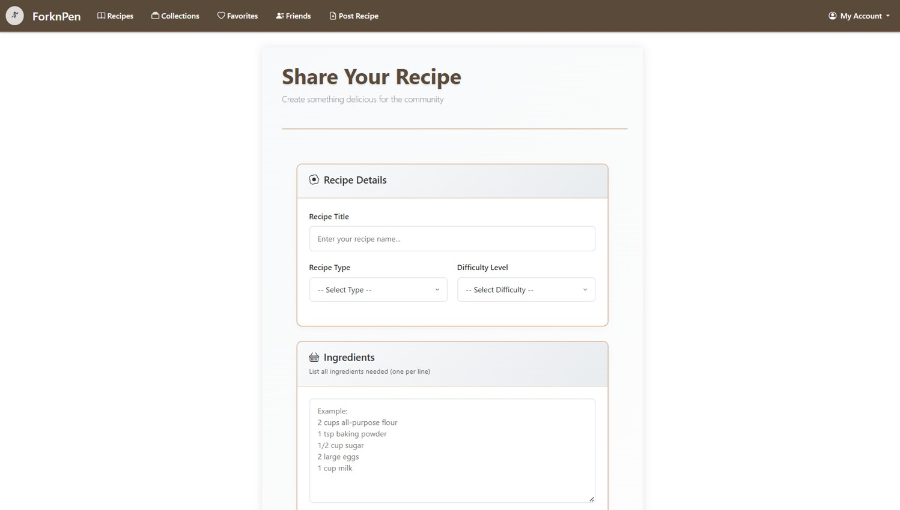

Web Application
A community-driven social network that connects passionate home cooks and culinary enthusiasts to discover and share recipes.
ForknPen is a recipe sharing platform which was designed to bridge the gap between home cooks and culinary enthusiasts through a community-driven experience. Unlike traditional recipe websites that offer one-way content consumption, this platform prioritizes social engagement, peer-to-peer interaction, and personalized content curation powered by a robust ASP.NET Core backend.


